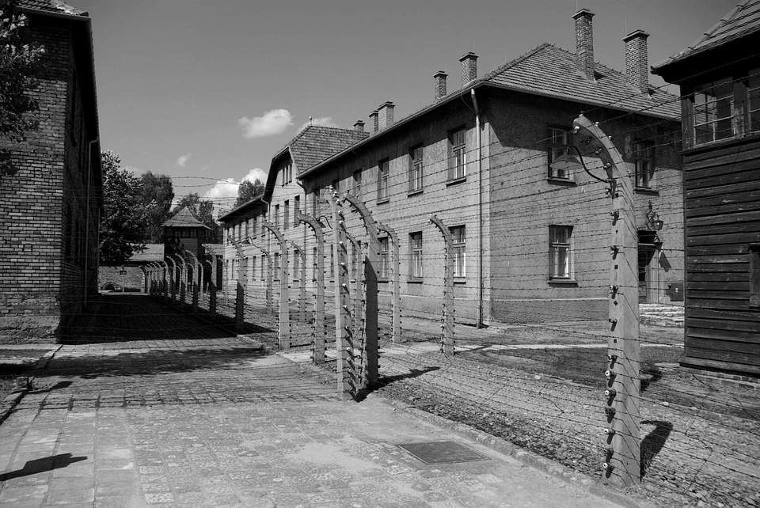

South East Asian News
Return to Homepage

The victories of Operation Barbarossa in the summer and fall of 1941 against Hitler's new enemy, the Soviet Union, led to dramatic changes in Nazi anti-Jewish ideology and the profile of prisoners brought to Auschwitz.
Construction on Auschwitz II-Birkenau began in October 1941 to ease congestion at the main camp. Reichsführer-SS Heinrich Himmler, head of the Schutzstaffel (SS), intended the camp to house 50,000 prisoners of war, who
would be interned as forced laborers. Plans called for the expansion of the camp first to house 150,000 and eventually as many as 200,000 inmates. An initial contingent of 10,000 Soviet prisoners of war arrived at
Auschwitz I in October 1941, but by March 1942 only 945 were still alive, and these were transferred to Birkenau, where most of them died from disease or starvation by May. By this time the Nazis had decided to
annihilate the Jewish people, so Birkenau was changed to a labor camp–extermination camp. The Auschwitz-Birkenau Memorial and Museum estimates that 1.3 million people, 1.1 million of them Jewish, were sent
to the camp during its existence.
The chief of construction of Auschwitz II-Birkenau was Karl Bischoff. Unlike his predecessor, he was a competent and dynamic bureaucrat who, in spite of the ongoing war,
carried out the construction deemed necessary. The Birkenau camp, the four crematoria, a new reception building, and hundreds of other buildings were planned and constructed.
Bischoff's plans called for each barrack to have an occupancy of 550 prisoners (one-third of the space allotted in other Nazi concentration camps). He later changed this
to 744 prisoners per barrack. The SS designed the barracks not so much to house people as to destroy them.
The first gas chamber at Birkenau was the "red house" (called Bunker 1 by SS staff), a brick cottage converted into a gassing facility by tearing out the inside and
bricking up the windows. It was operational by March 1942. A second brick cottage, the "white house" or Bunker 2, was converted some weeks later.These
structures were in use for mass killings until early 1943. Himmler visited the camp in person on 17 and 18 July 1942. He was given a demonstration of a mass killing
using the gas chamber in Bunker 2 and toured the building site of the new IG Farben plant being constructed at the nearby town of Monowitz.

In early 1943, the Nazis decided to greatly increase the gassing capacity of Birkenau. Crematorium II, which had been designed as a mortuary with morgues in the basement
and ground-level incinerators, was converted into a killing factory by installing gas-tight doors, vents for the Zyklon B (a highly lethal cyanide-based poison) to be
dropped into the chamber, and ventilation equipment to remove the gas thereafter. It went into operation in March. Crematorium III was built using the same design.
Crematoria IV and V, designed from the start as gassing centers, were also constructed that spring. By June 1943, all four crematoria were operational. Most of the victims
were killed using these four structures.